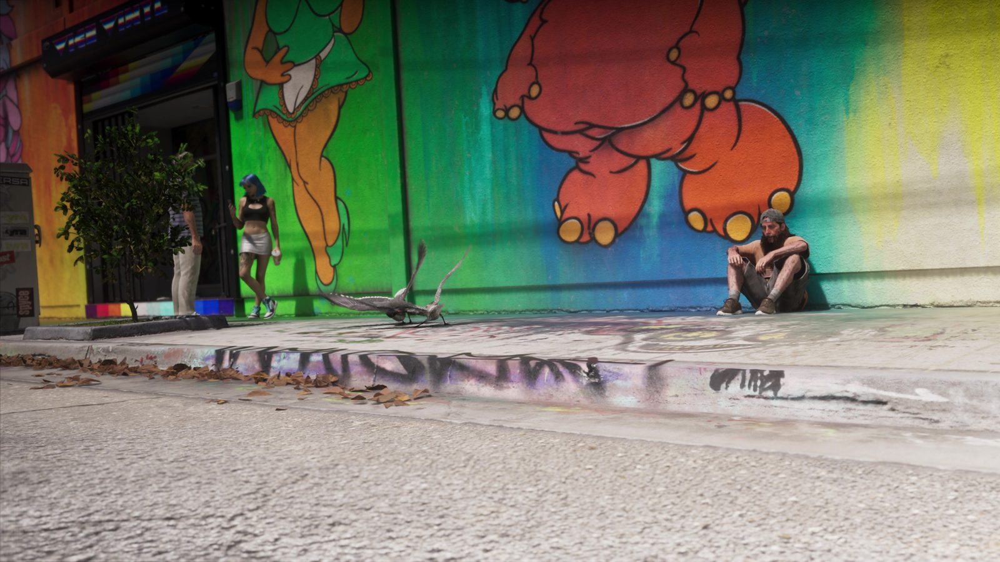
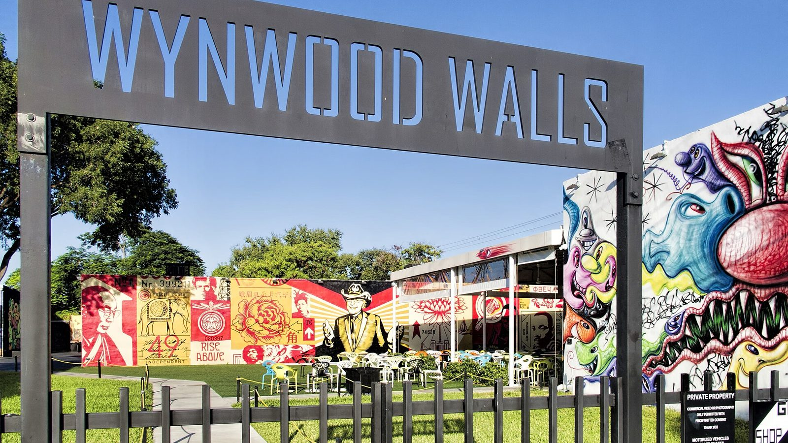
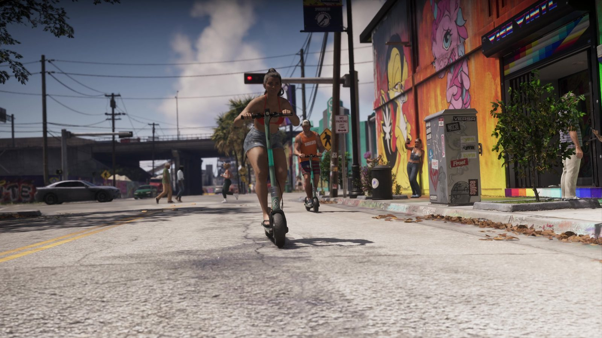

Муралы Вайс-Сити и район Винвуд в Майами
Опубликовано:
Стены, сплошь покрытые яркими муралами, граффити на асфальте и самокаты — так выглядит Винвуд. Rockstar район не называла, сравнение — версия фанатов.


- В «Расширенном показе» камера проезжает по улице, где стены домов целиком покрыты цветными муралами.
- В Майами так выглядит Винвуд — бывший район складов и фабрик к северу от центра.
- Wynwood Walls открыл девелопер Тони Голдман в 2009 году.
- На пике в районе работали больше 70 галерей.
Что в игре
Кадр из «Расширенного показа»: широкая улица у эстакады, по ней катятся люди на электросамокатах. Стены домов полностью покрыты муралами — огромные мультяшные персонажи, кислотные цвета, граффити даже на бордюрах. Под стеной сидит прохожий, у входа в магазин стоят люди.

Что в реальности
Винвуд (Wynwood) — район к северу от центра Майами. Долгое время здесь были склады, фабрики и жилые кварталы. Когда производство ушло, остались пустые стены. В 2009 году девелопер Тони Голдман открыл Wynwood Walls — площадку, где художники со всего мира расписывают стены бывших складов. За ней муралами покрылся весь район, рядом открылись галереи, бары и магазины. На пике здесь работали больше 70 галерей. Росту помогла и ярмарка современного искусства Art Basel Miami Beach, которая каждый декабрь собирает в Майами коллекционеров со всего мира.
Успех Винвуда ударил по самому Винвуду. Аренда выросла так сильно, что к 2020 году из более чем 70 галерей в районе осталось меньше десяти. На их месте теперь рестораны, офисы и новые дома, а муралы стали декорацией для туристов.
Совпадает и отличается
| Винвуд | GTA 6 | |
|---|---|---|
| Стены, покрытые муралами | Да | 🟢 Да |
| Граффити на асфальте и бордюрах | Да | 🟢 Да |
| Электросамокаты | Да | 🟢 Да |
| Конкретные муралы | Работы реальных художников | 🔵 Свои рисунки |
| Название района | Wynwood | Узнаем в игре |
Источники: Rockstar Games («Расширенный показ» GTA 6); Wynwood Walls (Goldman Properties); Art Basel Miami Beach.
Реальные фото: Фото: Dan Lundberg, CC BY-SA 2.0 · Wikimedia Commons. Кадры игры: Rockstar Games.
Каждый день — одно сравнение: кадр игры рядом с реальным фото. Подписывайтесь:
YouTubeInstagramTikTok
 vs
vs
 vs
vs